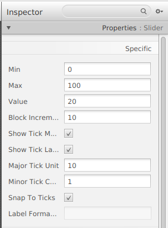
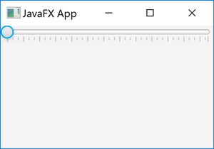
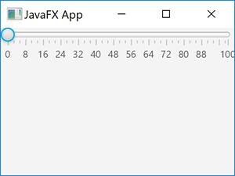

JavaFX Slider
El control Slider de JavaFX proporciona una forma para que el usuario seleccione (o muestre) un valor dentro de un intervalo dado, deslizando un controlador al punto deseado que representa el valor deseado.
El Control Slider JavaFX está representado por la clase JavaFX javafx.scene.control.Slider. Por ejemplo:

public void start(Stage primaryStage) {
primaryStage.setTitle("JavaFX App");
Slider slider = new Slider(0, 100, 0);
VBox vBox = new VBox(slider);
Scene scene = new Scene(vBox, 960, 600);
primaryStage.setScene(scene);
primaryStage.show();
}
Crear un control Slider
Para usar un control Slider JavaFX, se debe crear una instancia de la clase Slider. Por ejemplo:
Slider slider = new Slider(0, 100, 0);El constructor Slider utilizado en el ejemplo toma tres parámetros: el valor mínimo, el valor máximo y el valor inicial. El valor mínimo es el valor que representa deslizar el controlador completamente hacia la izquierda. Este es el comienzo del intervalo en el que el usuario puede seleccionar un valor. El valor máximo es el valor que representa deslizar el controlador completamente hacia la derecha. Este es el final del intervalo en el que el usuario puede seleccionar un valor. El valor inicial es el valor en el que debe ubicarse el identificador, cuando se le presenta al usuario al principio.
En esta ocasión tendremos las dos posibilidades:
- Especificar todos sus atributo de visualización desde el método initialize()
- Desde SceneBuilder establecer todos estos valores

Lectura del valor del control Slider
Puede leer el valor seleccionado de un control Slider se utiliza el método getValue(). Por ejemplo:
double value = slider.getValue();Major Tick Unidad
Podemos configurar la unidad de marca principal de un control Slider JavaFX. La unidad de marca principal es cuántas unidades cambia el valor cada vez que el usuario mueve el control Slider una marca. Por ejemplo, aquí se establece la unidad de marca principal de un control deslizante JavaFX en 8:
Slider slider = new Slider(0, 100, 0);
slider.setMajorTickUnit(8.0);Este control Slider cambiará su valor con 8.0 hacia arriba o hacia abajo cada vez que se mueva el controlador del control deslizante.
Minor Tick Count
También podemos establecer el recuento de ticks menores de un control Slider JavaFX a través del método setMinorTickCount(). El recuento de ticks menores especifica cuántos ticks menores hay entre dos de los ticks principales. Por ejemplo, aquí se establece el recuento de ticks menores en 2:
Slider slider = new Slider(0, 100, 0);
slider.setMajorTickUnit(8.0);
slider.setMinorTickCount(3);El Control Slider configurado aquí tiene 8,0 unidades de valor entre cada marca principal, y entre cada una de estas marcas principales tiene 3 marcas menores.
Snap Handle to Ticks
Podemos hacer que el control Slider de JavaFX se ajuste a los ticks utilizando el método Slider setSnapToTicks(), pasando un valor de parámetro de true. Ejemplo:
slider.setSnapToTicks(true);Show Tick Marks
Podemos hacer que el Control Slider JavaFX muestre marcas para las marcas cuando representa el control deslizante. Lo haremos utilizando su método setShowTickMarks(). Ejemplo:
slider.setShowTickMarks(true);
Show Tick Labels
Podemos hacer que el Slider JavaFX muestre etiquetas de marca para las marcas cuando representa el control deslizante. Lo haremos utilizando su método setShowTickLabels(). Ejemplo:
slider.setShowTickLabels(true);